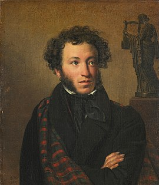

|  |
Александр ПушкинГоды жизни: 06 июня 1799 — 10 февраля 1837 Александр Пушкин начал писать свои первые произведения уже в семь лет. В годы учебы в Лицее он прославился, когда прочитал свое стихотворение Гавриилу Державину. Пушкин первым из русских писателей начал зарабатывать литературным трудом. Он создавал не только лирические стихи, но и сказки, историческую прозу и произведения в поддержку революционеров — за вольнодумство поэта даже отправляли в ссылки. «Из одной крайности в другую»Александр Пушкин родился в обедневшей дворянской семье 6 июня 1799 года. В раннем детстве он был молчаливым и малоподвижным ребенком — старшая сестра Ольга вспоминала, что до шести лет мальчик «был просто увалень». Начальное образование Пушкин получил дома. Воспитание его ничем не отличалось от общепринятой тогда в дворянских семьях системы: родители нанимали ему гувернеров и учителей из Франции, Германии, Англии, России. Учеба давалась Пушкину тяжело, а преподаватели отмечали, что он не прилежен. Однако вскоре мальчик увлекся чтением. «Проводил бессонные ночи и тайком в кабинете отца пожирал книги одну за другой», — вспоминал позже его младший брат Лев. «Не знаю, что выйдет из моего старшего внука. Мальчик умен и охотник до книжек, а учится плохо, редко когда урок свой сдаст порядком; то его не расшевелишь, не прогонишь играть с детьми, то вдруг так развернется и расходится, что ничем его не уймешь: из одной крайности в другую бросается, нет у него середины.» — Мария Ганнибал Любовь к чтению переросла в попытки создавать собственные тексты. Уже в семь лет Пушкин сочинял на французском языке маленькие комедии, подражая Мольеру. Позже, прочитав произведения Лафонтена, юный автор захотел писать басни. А ознакомившись с «Генриадой» Вольтера, Пушкин задумал поэму в шести песнях: все прочитанные книги вдохновляли начинающего автора. «Француз» в Царскосельском лицееВ 1811 году родители Пушкина решили отдать сына в Иезуитский коллегиум, но их планы изменились, когда в Царском Селе открылся лицей для дворянских детей. По протекции друзей Пушкины устроили 12-летнего сына в элитное заведение. Изначально здесь собирались готовить детей из императорской семьи и их сверстников к высшим гражданским чинам. Но статус Лицея понизился: Пушкин учился в привилегированном и закрытом учреждении, но среди равных себе детей из обедневших фамилий. В стенах Лицея многие крепко сдружились. Три товарища — Иван Пущин, Антон Дельвиг, Вильгельм Кюхельбекер — остались друзьями Пушкина на всю жизнь. В Лицее преподавали известный юрист Александр Куницын, философ Александр Галич, филолог Николай Кошанский. Именно профессора в большей степени влияли на интеллектуальное и нравственное становление лицеистов — родные могли навещать своих детей только по выходным. В будние дни занятия начинались в семь утра и продолжались до позднего вечера. В годы учебы Александр Пушкин воспринимал альма-матер как «монастырь» и мечтал о свободе, которая наступит с окончанием Лицея. Учился Пушкин не очень хорошо, особенно тяжело юному писателю давались логика и математика. При блестящей памяти ему недоставало усидчивости и внимания. Однако преподаватели отмечали эрудицию воспитанника. В Лицее он продолжал много читать и писать тексты на французском языке. Лицеист Сергей Комовский вспоминал, что из-за любви к этому языку Пушкина «называли… в насмешку французом, а по физиономии и некоторым привычкам обезьяною и даже смесью обезьяны с тигром». На русском языке Александр Пушкин составлял небольшие эпиграммы и послания, а также намечал структуру будущей автобиографии. Юного автора настолько увлекало литературное творчество, что идеи произведений рождались одна за другой на несколько месяцев вперед: «Вчера написал я третью главу «Фатама, или Разум человеческий». <…> Начал я комедию — не знаю, кончу ли ее. Третьего дня хотел я написать ироическую поэму «Игорь и Ольга». Летом напишу я «Картину Царского Села»». Писал Пушкин и стихотворения. В 1814 году он впервые опубликовал одно из них — «К другу-стихотворцу» — под псевдонимом Александр Н.к.ш.п. в журнале «Вестник Европы». Первый крупный успех ждал Пушкина в 1815 году во время зимнего переводного экзамена — 15-летний лицеист прочитал свое стихотворение «Воспоминания в Царском Селе». На экзамене присутствовал Гавриил Державин, он был потрясен творением юного поэта. Пушкин позже писал: «Не помню, как я кончил свое чтение; не помню, куда убежал. Державин был в восхищении; он меня требовал, хотел меня обнять… Меня искали, но не нашли». Служба и карьера ПушкинаВ 1817 году Александр Пушкин окончил Лицей. По успеваемости он был 24-м из 29 выпускников. Пушкина направили в Коллегию иностранных дел — чиновником X класса. Но там он только числился: государственная служба мало привлекала юношу. После шести лет учебы Пушкин с головой окунулся в светскую жизнь столицы и, как известный и заслуженный автор, попал в общество петербургских писателей. Еще в Лицее он стал членом литературного кружка «Арзамас», который боролся с архаическими языковыми традициями. В 1819 году Пушкин вступил в литературно-театральное общество «Зеленая лампа» при декабристском «Союзе благоденствия». Его участники пропагандировали свободолюбивые идеи. На собраниях читали стихи, обсуждали театральные премьеры, критиковали публицистические статьи. Здесь велись не только светские споры, но и политические беседы. Все это отразилось на творчестве Пушкина: он написал несколько эпиграмм на государственных деятелей того времени, оду «Вольность», стихотворения «К Чаадаеву» и «Деревня». Острые политические произведения навлекли гнев Александра I, и император решил сослать Пушкина в Сибирь или в Соловецкий монастырь. Однако за поэта заступился Николай Карамзин: по службе Пушкина перевели из столицы на Юг. Перед отъездом, в 1820 году, Александр Пушкин закончил поэму «Руслан и Людмила». Василий Жуковский очень высоко оценил это произведение и подарил поэту свой портрет с подписью «Победителю ученику от побежденного учителя». Южная ссылкаВесной 1820 года Александр Пушкин отправился в Кишинев, в канцелярию главного попечителя колонистов Южного края. По пути к новому месту службы поэт сильно заболел. Чтобы поправить здоровье, Пушкин поехал сначала на Кавказ, затем — в Крым. Путевые впечатления от юга империи позже отразились в некоторых его произведениях. Наконец, в сентябре 1820 года Пушкин прибыл в Кишинев. Новый начальник генерал-лейтенант Иван Инзов относился к службе своего подчиненного снисходительно и никаких должностных дел ему не поручал. Своим временем Пушкин распоряжался как хотел: общался с членами «Союза благоденствия», вступил в масонскую ложу «Овидий». В свободные часы он по-прежнему писал. В этот период появились «Кавказский пленник», «Гавриилиада», «Братья-разбойники», «Бахчисарайский фонтан», «Песнь о вещем Олеге». Также Пушкин начал работать над романом в стихах «Евгений Онегин». В это время в Петербурге стали выходить книги поэта — «Руслан и Людмила», «Кавказский пленник», «Бахчисарайский фонтан». С них и началась профессиональная деятельность Пушкина: он первым из писателей в России стал зарабатывать литературным трудом. В 1823 году Пушкин переехал в Одессу. Здесь он устроился в канцелярию графа Воронцова. Однако вскоре служебные и личные конфликты привели к тому, что Пушкин попросил отставки. «Воронцов — вандал, придворный хам и мелкий эгоист. Он видел во мне коллежского секретаря, а я, признаюсь, думаю о себе что-то другое. <…> Удаляюсь от зла и сотворю благо: брошу службу, займусь рифмой.» — Александр Пушкин Меж тем в Москве в 1824 году полиция вскрыла письмо Пушкина: тот писал Кюхельбекеру об увлечении «атеистическими учениями». За такие высказывания поэту грозила не просто отставка. Пушкина отправили в настоящую ссылку в семейное имение в селе Михайловском Псковской губернии — Юг все-таки выдавали за принудительную командировку. Писателя лишили скромного жалованья, установили надзор, а конец срока наказания никак не обозначили. Пушкин в МихайловскомВ Михайловском Пушкин вел уединенный образ жизни. Родители вместе с сестрой Ольгой и братом Львом покинули имение, чтобы ссыльный дурно не влиял на семью. Поэт поначалу обрадовался тишине и спокойствию, но с наступлением осенних холодов затосковал. Единственным развлечением для Пушкина стали беседы с няней Ариной Родионовной. Ее сказки, как говорил поэт, исправляли недостатки французского воспитания. Он записывал сюжеты волшебных историй, а позднее использовал их в своих произведениях. <…> Дуэль и смерть поэтаВ 1831 году Александра Пушкина приняли на службу в качестве историографа, чтобы тот писал «Историю Петра». Но писателя больше увлекала биография бунтаря Емельяна Пугачева. Пушкин замыслил создать эпический роман об этой эпохе. Сначала он собирал информацию в архивах, затем отправился по районам пугачевского восстания — Поволжью и Приуралью, чтобы достоверно описать события того времени. После экспедиции Александр Пушкин уехал в Болдино. В родовом имении он работал над научным сочинением «История Пугачева», написал «Медного всадника», «Анджело», «Пиковую даму», «Сказку о рыбаке и рыбке», «Сказку о мертвой царевне и о семи богатырях». Вторая Болдинская осень оказалась вдвое короче предыдущей, но не менее продуктивной для Пушкина. Николай I пожаловал Пушкину младшее придворное звание — чин камер-юнкера. Теперь чету Пушкиных могли официально приглашать на придворные балы. Эту должность поэт считал оскорбительной для своего возраста. Писатель хотел отказаться от нового звания, но пришлось смириться. «Друзья, Вельегорский и Жуковский, должны были обливать холодною водою нового камер-юнкера, до того он [Пушкин] был взволнован этим пожалованием! Если б не они, он, будучи вне себя, разгоревшись, с пылающим лицом, хотел идти во дворец и наговорить грубостей самому царю.» — Павел Нащокин, друг поэта В 1830-е годы Пушкин писал уже только реалистичные произведения. Но его современники не были готовы к новому литературному направлению, которое описывало социальное неравенство, исторические феномены и другие сложные стороны жизни. Собратья по перу не принимали новые произведения писателя, в придворных кругах он тоже не встречал поддержки. В Петербурге ходили сплетни о жене Пушкина и ее поклонниках, поэту приходили анонимные письма. Поэт не мог оставаться хладнокровным и выносить оскорбительные слухи. 8 февраля 1837 года состоялась дуэль Александра Пушкина с Жоржем Дантесом — главным интриганом, порочащим репутацию Натальи Пушкиной. Во время поединка поэт был тяжело ранен и скончался через два дня. Похоронили Александра Пушкина на территории Святогорского монастыря Псковской губернии. |